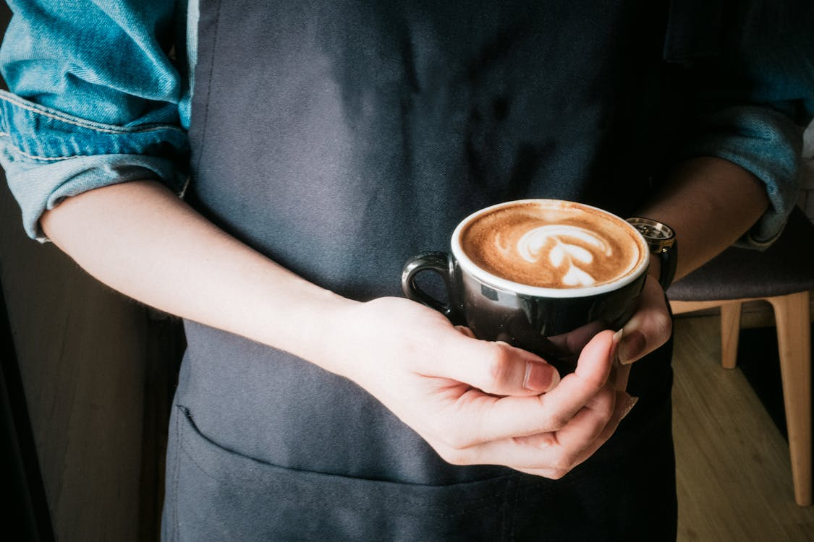

不仅仅是一杯饮品
对于当代大学生而言，咖啡早已超越了简单的提神饮料的范畴。它是早八课前的续命水，是图书馆熬夜写论文时的最佳伴侣，更是社交破冰的独特语言。在浓郁的香气中，我们交换观点，激发灵感。
UniCafe 专注于发掘校园周边的精品咖啡文化。我们相信，每一颗精心烘焙的豆子背后，都藏着风土的故事；每一次注水的闷蒸里，都蕴含着匠人的心意。让我们一起放慢脚步，在快节奏的校园生活中，感受手冲带来的仪式感。


对于当代大学生而言，咖啡早已超越了简单的提神饮料的范畴。它是早八课前的续命水，是图书馆熬夜写论文时的最佳伴侣，更是社交破冰的独特语言。在浓郁的香气中，我们交换观点，激发灵感。
UniCafe 专注于发掘校园周边的精品咖啡文化。我们相信，每一颗精心烘焙的豆子背后，都藏着风土的故事；每一次注水的闷蒸里，都蕴含着匠人的心意。让我们一起放慢脚步，在快节奏的校园生活中，感受手冲带来的仪式感。

从埃塞俄比亚的耶加雪菲到哥伦比亚的慧兰，了解不同产区的风味轮。学会辨别水洗与日晒处理法带来的口感差异，找到属于你的那一款风味。

不需要昂贵的意式咖啡机，只需要一套简单的手冲器具或法压壶。掌握粉水比、水温与研磨度，在宿舍也能做出一杯金杯萃取的精品咖啡。

精选校园周边适合学习的宝藏店铺。由于电源插座充足度、Wi-Fi速度、噪音分贝等维度进行评测，助你高效完成期末复习。